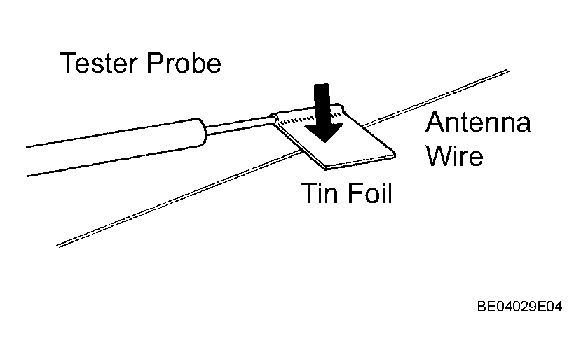

On-Vehicle Inspection
- CHECK WINDOW GLASS ANTENNA WIRE NOTE: When cleaning the glass, use a soft, dry cloth, and wipe the glass in the direction of the wire. Be careful not to damage the wires. Do not use detergents or glass cleaners with abrasive ingredients. When measuring voltage, wind a piece of tin foil around the top of the negative probe and press the foil against the wire with your finger, as shown in the illustration.

Courtesy of © TOYOTA, LICENSE AGREEMENT TMS1002- Inspect the continuity, at the center of each antenna wire, as shown in the illustration.